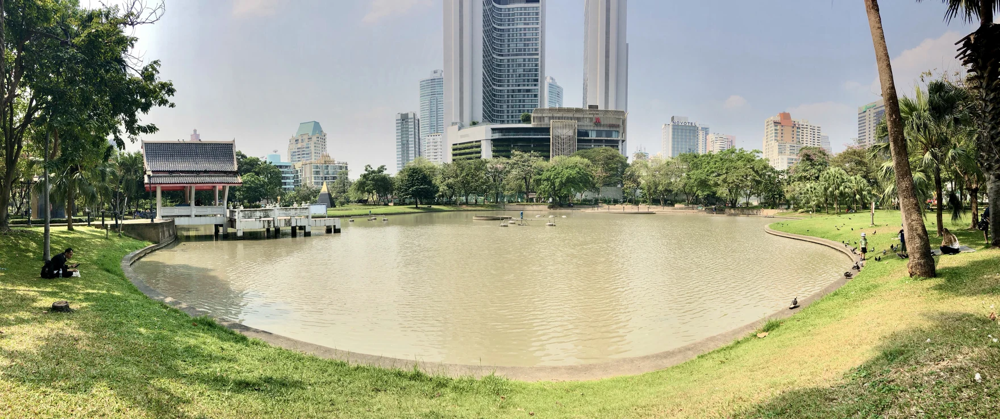

Journal 002 · November 2026
Bangkok
Phrom Phong to Langsuan
Four days in Bangkok, with time for Thai designers, a Sukhumvit spa, Spanish tapas and jazz in Langsuan.
Explore the itinerary
Flights & bookings
Flights use each airport’s local time. Booking times are Bangkok time.
Outbound · FD231
ConfirmedThai AirAsia · Thu 26 Nov 2026
- Taipei Taoyuan (TPE)
- · Terminal 1
- Bangkok Don Mueang (DMK)
- · Terminal 1
Return · FD230
ConfirmedThai AirAsia · Sun 29 Nov 2026
- Bangkok Don Mueang (DMK)
- · Terminal 1
- Taipei Taoyuan (TPE)
- · Terminal 1
- Confirmed
Mercure Bangkok Sukhumvit 24
Thu 26 Nov from 14:00 · Sun 29 Nov by 12:00
- Confirmed
VASO Spanish Tapas Bar
Fri 27 Nov · 19:00
- Confirmed
Crimson Room
Fri 27 Nov · 21:00
- Confirmed
Oasis Spa pickup
Sat 28 Nov · 10:30
- Confirmed
Oasis Spa Sukhumvit 31
Sat 28 Nov · 11:00
- Confirmed
Bar.Yard Rooftop Bar
Sat 28 Nov · 18:00
- Optional walk-in
Friday massage
Fri 27 Nov · Afternoon
- Walk-in
Sindhorn Kempinski lobby
Sat 28 Nov · Afternoon
- To arrange
Airport transfers
Arrival and departure days
Day by day
Suggested time windows · Bangkok local time
Day 1Arrival in Phrom Phong
Evening
Don Mueang to Sukhumvit
From Don Mueang International Airport, take an airport taxi or arrange a car to Phrom Phong. Allow time for immigration, bags and pickup.
Day 2Shopping, tapas & jazz
9–11 am
Breakfast together
Start with an easy breakfast in Phrom Phong.
6–11 pm
Tapas and jazz together
Head to Velaa Sindhorn Village for Spanish small plates at VASO, then walk through the complex to Crimson Room for jazz.
Day 3Spa, tea & rooftop views
9 am–1 pm
Spa in Sukhumvit
Start with breakfast and a visit to Oasis Spa Sukhumvit 31.
1–5 pm
EmQuartier and the glass atrium
Return to EmQuartier for a slower browse, then head to Sindhorn Kempinski for coffee and dessert.
6–10 pm
Dinner and skyline views
Finish the day at Bar.Yard, on the rooftop at Kimpton Maa-Lai.
Day 4Back to Don Mueang
Early morning
Departure
Arrange a taxi or car in advance for the airport run. Confirm the terminal and allow time for check-in, security and traffic.
Getting around
Allow extra time for traffic, station waits and pickups.
- 25–45 min
Don Mueang and Phrom Phong
Airport taxi or car
- 25–35 min
Phrom Phong to Velaa Sindhorn Village
BTS to Chit Lom, then walk
- 1–3 min
VASO to Crimson Room
Walk within Velaa Sindhorn Village
- 3–8 min
Sindhorn Kempinski to Bar.Yard
Walk between the hotels and allow time for the rooftop lift